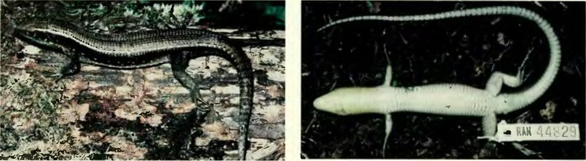
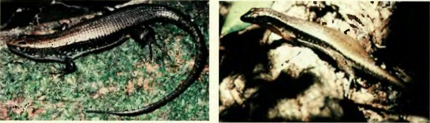
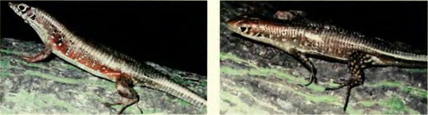
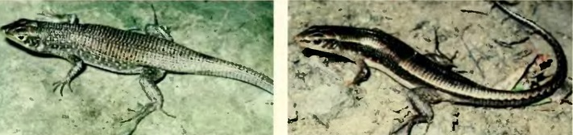

Scientific Papers, Natural History Museum, The University of Kansas
Zonosaurus aeneus, UMMZ 207336, adult, Andringitra National Park. Zonosaurus aeneus, UMMZ 207336, adult, Andringitra National Park.
Zonosaurus brygooi, adult, Zahamena Strict Reserve.
Zonosaurus anelanelany, adult, Sainte-Luce strand forest.
Zonosaurus rufipes, adult, Lokobe National Park, Nosy Be.
Zonosaurus subunicolor, adult, Lokobe National Park, Nosy Be.
Zonosaurus tsingy, adult, Ankarana National Park. Zonosaurus bemaraha, UADBA, adult, Bemaraha National Park.
Fig. 2. The seven species of dwarf Zonosaurus.



